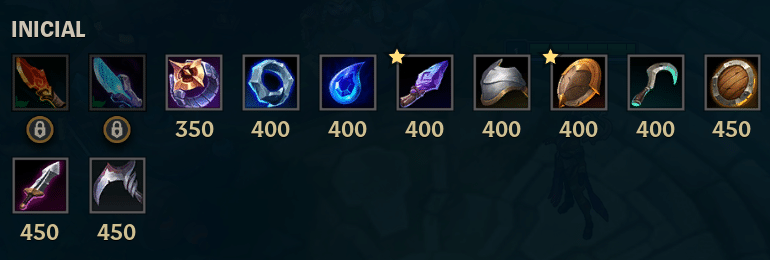
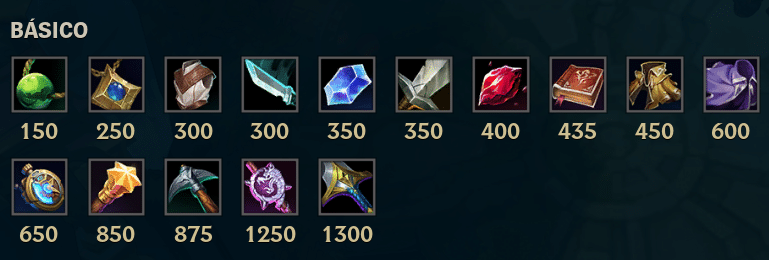
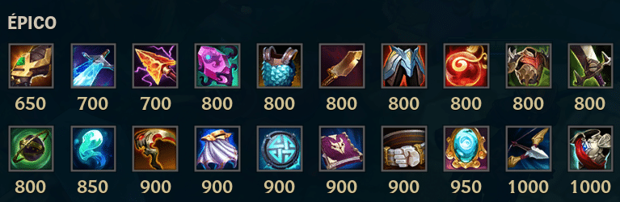
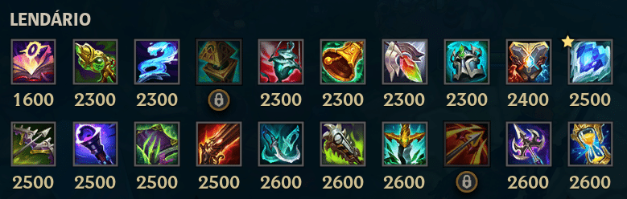
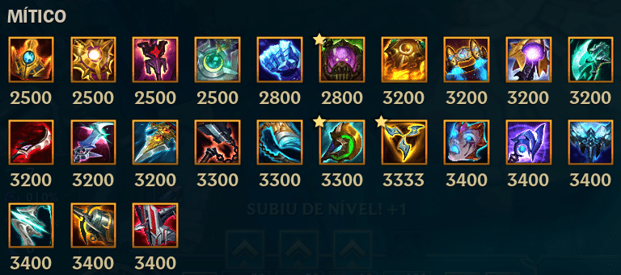
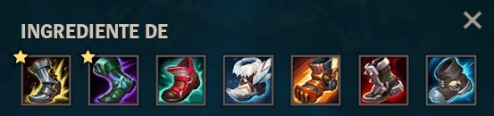
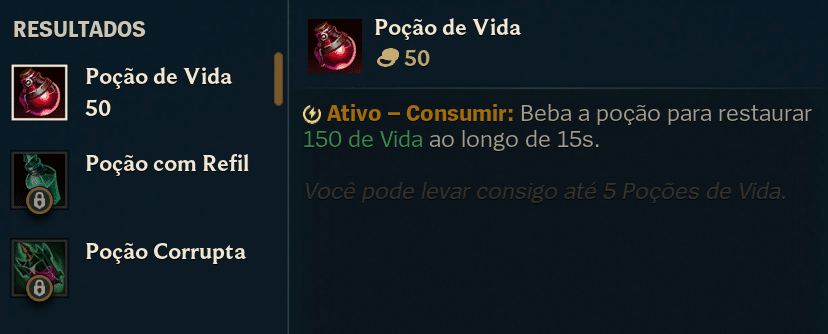

ITENS
Itens iniciais do LoL

Lâmina Cálida (350 gold): 10% vampirismo universal contra monstros
Lâmina Álgida (350 gold): 10% vampirismo universal contra monstros
Anel de Doran (400 gold): +15 poder de habilidade, +70 vida
Lacre Sombrio (400 gold): +15 poder de habilidade, +40 vida
Lágrima da Deusa (400 gold): +240 mana
Gume do Ladrão Arcano (400 gold): +8 poder de habilidade, +10 vida, 50% regeneração da mana base, +2 de ouro a cada 10s
Guarda-Ombros de Aço (400 gold): +3 dano de ataque, +30 vida, 25% regeneração da vida base, +2 de ouro a cada 10s
Escudo Relicário (400 gold): +5 poder de habilidade, +30 vida, 25% regeneração da vida base, +2 de ouro a cada 10s
Foice Espectral (400 gold): +5 dano de ataque, +10 vida, 25% regeneração da mana base, +2 de ouro a cada 10s
Escudo de Doran (450 gold): +80 vida
Lâmina de Doran (450 gold): +8 dano de ataque, +80 vida
Abatedora (450 gold): +7 dano de ataque
Itens Básicos do Lol

Pérola do Rejuvenescimento (150 gold): 50% regeneração da vida base
Amuleto da Fada (200 gold): 25% regeneração da mana base
Couraça de Pano (300 gold): +15 armadura
Adaga (300 gold): 12% velocidade de ataque
Cristal de Safira (350 gold): +250 mana
Espada Longa (350 gold): +10 dano de ataque
Cristal de Rubi (400 gold): +150 vida
Tomo Amplificador (435 gold): +20 poder de habilidade
Manto Anula-Magia (450 gold): +25 resistência mágica
Capa da Agilidade (600 gold): 15% chance de acerto crítico
Cronômetro (650 gold): quando ativado, dá invulnerabilidade de 2.5s
Varinha Explosiva (850 gold): +40 poder de habilidade
Picareta (875 gold): +25 dano de ataque
Bastão Desnecessariamente Grande (1.250 gold): +60 poder de habilidade
Espada G.p.C. (1.300 gold): +40 dano de ataque
Itens Épicos do Lol

Braçadeira Cristalina (650 gold): +200 vida, 50% regeneração da vida base
Fulgor (700 gold): após usar uma habilidade, seu próximo ataque ganha força
Estilhaço de Kircheis (700 gold): 15% de velocidade de ataque
Ídolo Proibido (800 gold): 10% de cura e resistência do escudo, 50% regeneração da mana base
Cota de Malha (800 gold): +40 armadura
Faca da Fúria (800 gold): 25% velocidade de ataque
Couraça Lunar Alada (800 gold): +150 vida
Gema Ardente (800 gold): +200 vida, +10 aceleração de habilidade
Colete Espinhoso (800 gold): +35 armadura
Chamado do Carrasco (800 gold): +15 dano de ataque
Orbe do Oblívio (800 gold): +30 poder de habilidade
Cintilação Etérea (850 gold): +30 poder de habilidade
Cetro Vampírico (900 gold): +15 dano de ataque, 10% roubo de vida
Capa Negatron (900 gold): +50 resistência mágica
Broquel Glacial (900 gold): +20 armadura, +250 mana, +10 aceleração de habilidade
Códex Demoníaco (900 gold): +35 poder de habilidade, +10 aceleração de habilidade
Cinto do Gigante (900 gold): +350 vida
Espelho de Bandópolis (950 gold): +20 poder de habilidade, +10 aceleração de habilidade, 50% regeneração da mana base
Arco Recurvo (1.000 gold): +25% velocidade de ataque
Carapaça do Vigia (1.000 gold): +40 armadura
Armaguarda da Caçadora (1.000 gold): +20 poder de habilidade, +15 armadura
Barreira Verdejante (1.000 gold): +25 poder de habilidade, +25 resistência mágica
Zelo (1.050 gold): 18% velocidade de ataque, 15% chance de acerto crítico
Alternador Hextec (1.050 gold): +40 poder de habilidade
Machado Termestre (1.100 gold): +15 dano de ataque, 15% velocidade de ataque
Punhal Serrilhado (1.100 gold): +30 dano de ataque
Martelo de Guerra de Caulfield (1.100 gold): +25 dano de ataque, +10 aceleração de habilidade
Pedra-Vigia Inspiradora (1.100 gold): armazena sentinelas
Brasa de Bami (1.100 gold): +300 vida
Tiamat (1.200 gold): +25 dano de ataque
Chicote Ferrifarpo (1.200 gold): +30 dano de ataque
Capuz do Espectro (1.250 gold): +250 vida, +25 resistência mágica
Joia da Ruína (1.250 gold): +25 poder de habilidade, 15% penetração mágica
Bandana de Mercúrio (1.300 gold): +30 resistência mágica
Hexdrinker (1.300 gold): +20 dano de ataque, +35 resistência mágica
Capítulo Perdido (1.300 gold): +40 poder de habilidade, +300 mana, +10 aceleração de habilidade
Olhar Sanguessuga (1.300 gold): +20 poder de habilidade, +250 vida, 5% de vampirismo universal
Aljava Vespertina (1.300 gold): +30 dano de ataque, 15% velocidade de ataque
Último Sussurro (1.450 gold): +20 dano de ataque, 20% penetração de armadura
Égide da Legião (1.500 gold): +30 armadura, +30 resistência mágica, +10 aceleração de habilidade
Itens Lendários do Lol

Ladrão de Almas de Mejai (1.600 gold): +20 poder de habilidade, +100 vida
Putrificador Quimtec (2.300 gold): +50 poder de habilidade, +20 aceleração de habilidade, 100% regeneração da mana base
Cajado Aquafluxo (2.300 gold): +50 poder de habilidade, 10% de cura e resistência do escudo, 100% regeneração da mana base
Pedra-Vigia Vigilante (2.300 gold): +40 aceleração de habilidade, 10% velocidade de movimento
Turíbulo Ardente (2.300 gold): +60 poder de habilidade, 10% de cura e resistência do escudo, 100% regeneração da mana base
Bênção de Mikael (2.300 gold): 20% de cura e resistência do escudo, +50 de resistência mágica, +15 aceleração de habilidade, 100% regeneração da mana base
Redenção (2.300 gold): 20% de cura e resistência do escudo, +200 vida, +15 aceleração de habilidade, 100% regeneração da mana base
Juramento do Cavaleiro (2.300 gold): +400 vida, +10 aceleração de habilidade, 300% regeneração da vida base
Convergência de Zeke (2.400 gold): +250 vida, +25 armadura, +250 mana, +20 aceleração de habilidade
Coração Congelado (2.500 gold): +70 armadura, +400 mana, +20 aceleração de habilidade
Lembrete Mortal (2.500 gold): +25 dano de ataque, 25% velocidade de ataque, 20% chance de acerto crítico, 7% velocidade de movimento
Cajado do Vazio (2.500 gold): +65 poder de habilidade, 40% penetração mágica
Morellonomicon (2.500 gold): +80 poder de habilidade, +250 vida
Canhão Fumegante (2.500 gold): 35% velocidade de ataque, 20% chance de acerto crítico, 7% velocidade de movimento
Dançarina Fantasma (2.600 gold): 25% velocidade de ataque, +20 dano de ataque, 20% chance de acerto crítico, 7% velocidade de movimento
Serrespada Quimiopunk (2.600 gold): +45 dano de ataque, +250 vida, +15 aceleração de habilidade
Presa da Serpente (2.600 gold): +55 dano de ataque, +18 letalidade
Furacão de Runaan (2.600 gold): 55% velocidade de ataque, 20% chance de acerto crítico, 7% velocidade de movimento
Glaive Sombria (2.600 gold): +50 dano de ataque, +12 letalidade, +15 aceleração de habilidade
Ampulheta de Zhonya (2.600 gold): +65 poder de habilidade, +45 armadura, +10 aceleração de habilidade
Véu da Banshee (2.600 gold): +80 poder de habilidade, +45 resistência mágica,
Máscara Abissal (2.700 gold): +350 vida, +60 resistência mágica
Presságio de Randuin (2.700 gold): +250 vida, +80 armadura, 10 aceleração de habilidade
Armadura de Espinhos (2.700 gold): +350 vida, +60 armadura
Chuva de Canivete (2.700 gold): +40 dano de ataque, 15% velocidade de ataque, 20% chance de acerto crítico
Anjo Guardião (2.800 gold): +40 dano de ataque, +40 armadura
Lâmina da Fúria de Guinsoo (2.800 gold): 45% velocidade de ataque, 20% chance de acerto crítico
Força da Natureza (2.900 gold): +350 vida, +60 resistência mágica, 5% velocidade de movimento
Manamune (2.900 gold): +35 dano de ataque, +500 mana, 15 aceleração de habilidade
Semblante Espiritual (2.900 gold): +450 vida, +40 resistência mágica, 10 aceleração de habilidade, 100% regeneração da vida base
Lembranças do Lorde Dominik (2.900 gold): +35 dano de ataque, 20% chance de acerto crítico, 35% penetração de armadura
Colhedor de Essência (2.900 gold): +55 dano de ataque, 20% chance de acerto crítico, 20 aceleração de habilidade
Couraça do Defunto (2.900 gold): +400 vida, +40 armadura, 5% velocidade de movimento
Limiar da Noite (2.900 gold): +50 dano de ataque, +10 letalidade, +325 vida
Cajado do Arcanjo (3.000 gold): +65 poder de habilidade, +500 mana
Perdição de Lich (3.000 gold): +70 poder de habilidade, 10% velocidade de movimento
Lâmina Sanguinária (3.000 gold): +50 dano de ataque, +10 letalidade, +12 vampirismo físico
Armadura de Warmog (3.000 gold): +800 vida, +10 aceleração de habilidade, 200% regeneração da vida base
Cetro de Cristal de Rylai (3.000 gold): +90 poder de habilidade, +350 vida
Cimitarra Mercurial (3.000 gold): +40 dano de ataque, 20% chance de acerto crítico, +30 resistência mágica
Lâmina Fantasma de Youmuu (3.000 gold): +60 dano de ataque, +18 letalidade
Dente de Na'Shor (3.000 gold): +100 poder de habilidade, 50% velocidade de ataque
Foco do Horizonte (3.000 gold): +115 poder de habilidade
Ímpeto Cósmico (3.000 gold): +75 poder de habilidade, +200 vida, +20 aceleração de habilidade
Abraço Demoníaco (3.000 gold): +70 poder de habilidade, +350 vida
Alvorada da Pratânia (3.000 gold): +40 dano de ataque, +300 vida, +35 resistência mágica
A Coletora (3.000 gold): +55 dano de ataque, 20% chance de acerto crítico, +12 letalidade
Mandíbula de Malmortius (3.100 gold): +50 dano de ataque, +50 resistência mágica, +15 aceleração de habilidade
Limite da Razão (3.100 gold): +30 dano de ataque, 40% velocidade de ataque, +50 resistência mágica
Dança da Morte (3.100 gold): +50 dano de ataque, +40 armadura, +15 aceleração de habilidade
Sinal de Sterak (3.100 gold): +50 dano de ataque, +400 vida
Espada do Rei Destruído (3.200 gold): +40 dano de ataque, 25% velocidade de ataque, 12% roubo de vida
Placa Gargolítica (3.300 gold): +60 armadura, +60 resistência mágica, +15 aceleração de habilidade
Hidra Raivosa (3.300 gold): +65 dano de ataque, +20 aceleração de habilidade, 10% vampirismo universal
Cutelo Negro (3.300 gold): +40 dano de ataque, +300 vida, +25 aceleração de habilidade
Hidra Titânica (3.300 gold): +30 dano de ataque, +500 vida
Gume do Infinito (3.400 gold): +70 dano de ataque, 20% chance de acerto crítico
Adagas Rápidas Navori (3.400 gold): +60 dano de ataque, 20% chance de acerto crítico, +30 aceleração de habilidade
Rancor de Serylda (3.400 gold): +45 dano de ataque, 30% penetração de armadura, +20 aceleração de habilidade
Capuz da Morte de Rabadon (3.800 gold): +120 poder de habilidade
Itens Míticos do Lol

Hino Bélico de Shurelya (2.500 gold): +40 poder de habilidade, +200 vida, +20 aceleração de habilidade, 100% regeneração da mana base
Medalhão dos Solari de Ferro (2.500 gold): +200 vida, +20 aceleração de habilidade, +30 armadura, +30 resistência mágica
Mandato Imperial (2.500 gold): +40 poder de habilidade, +200 vida, +20 aceleração de habilidade, 100% regeneração da mana base
Regenerador de Pedra Lunar (2.500 gold): +40 poder de habilidade, +200 vida, +20 aceleração de habilidade, 100% regeneração da mana base
Manopla do Raio de Gelo (2.800 gold): +350 vida, +25 armadura, +25 resistência mágica, +20 aceleração de habilidade
Quimiotanque Turbo (2.800 gold): +350 vida, +25 armadura, +25 resistência mágica, +20 aceleração de habilidade
Égide de Fogo Solar (3.200 gold): +350 vida, +30 armadura, +30 resistência mágica, +15 aceleração de habilidade
Explocinturão Hextec (3.200 gold): +90 poder de habilidade, +350 vida, +15 aceleração de habilidade
Criafendas (3.200 gold): +80 poder de habilidade, +300 vida, +15 aceleração de habilidade, 8% de vampirismo universal
Colhedor Noturno (3.200 gold): +90 poder de habilidade, +300 vida, +15 aceleração de habilidade
Crepúsculo de Draktharr (3.200 gold): +60 dano de ataque, +18 letalidade, +20 aceleração de habilidade
Eclipse (3.200 gold): +55 dano de ataque, +18 letalidade, 8% de vampirismo universal
Garra do Espreitador (3.200 gold): +60 dano de ataque, +21 letalidade, +20 aceleração de habilidade
Hemodrenário (3.300 gold): +45 dano de ataque, +400 vida, +20 aceleração de habilidade, 150% regeneração da vida base
Quebrapassos (3.300 gold): +45 dano de ataque, 20% velocidade de ataque, +300 vida, +20 aceleração de habilidade
Ruptor Divino (3.300 gold): +40 dano de ataque, +400 vida, +20 aceleração de habilidade
Força da Trindade (3.333 gold): +25 dano de ataque, 35% velocidade de ataque, +200 vida, +20 aceleração de habilidade
Angústia de Liandry (3.400 gold): +80 poder de habilidade, +600 mana, +20 aceleração de habilidade
Tormenta de Luden (3.400 gold): +80 poder de habilidade, +6 penetração mágica, +600 mana, +20 aceleração de habilidade
Glacieterno (3.400 gold): +80 poder de habilidade, +250 vida, +600 mana, +20 aceleração de habilidade
Força do Vendaval (3.400 gold): +60 dano de ataque, 20% velocidade de ataque, 20% chance de acerto crítico
Mata-Cráquens (3.400 gold): +60 dano de ataque, 25% velocidade de ataque, 20% chance de acerto crítico
Arco-Escudo Imortal (3.400 gold): +55 dano de ataque, 20% velocidade de ataque, 20% chance de acerto crítico, 12% chance de roubo de vida
Itens Botas do Lol

Botas (300 gold): +25 de velocidade de movimento
Botas da Rapidez (900 gold): +60 velocidade de movimento
Botas Ionianas da Lucidez (900 gold): +20 aceleração de habilidade, +45 velocidade de movimento
Botas da Mobilidade (1.00 gold): +25 velocidade de movimento
Botas Galvanizadas de Aço (1.100 gold): +20 armadura, +45 velocidade de movimento
Grevas do Berserker (1.100 gold): 35% velocidade de ataque, +45 velocidade de movimento
Sapatos do Feiticeiro (1.100 gold): +18 penetração mágica, +45 velocidade de movimento
Passos de Mercúrio (1.100 gold): +25 resistência mágica, +45 velocidade de movimento, 30% tenacidade
Itens Consumíveis do Lol

Sentinela Invisível (grátis): amuleto de visão
Alteração Vidente (grátis): amuleto de visão
Sentinela de Controle (grátis): amuleto de visão
Lente do Oráculo (grátis): amuleto que retira visão
Poção de Vida (50 gold): restaura vida
Poção com Refil (150 gold): restaura vida
Poção Corrupta (500 gold): restaura mana e vida
Elixir de Ferro (500 gold): vida + tenacidade
Elixir da Feitiçaria (500 gold): poder de habilidade + regeneração de mana
Elixir da Ira (500 gold): dano de ataque + vampirismo físico